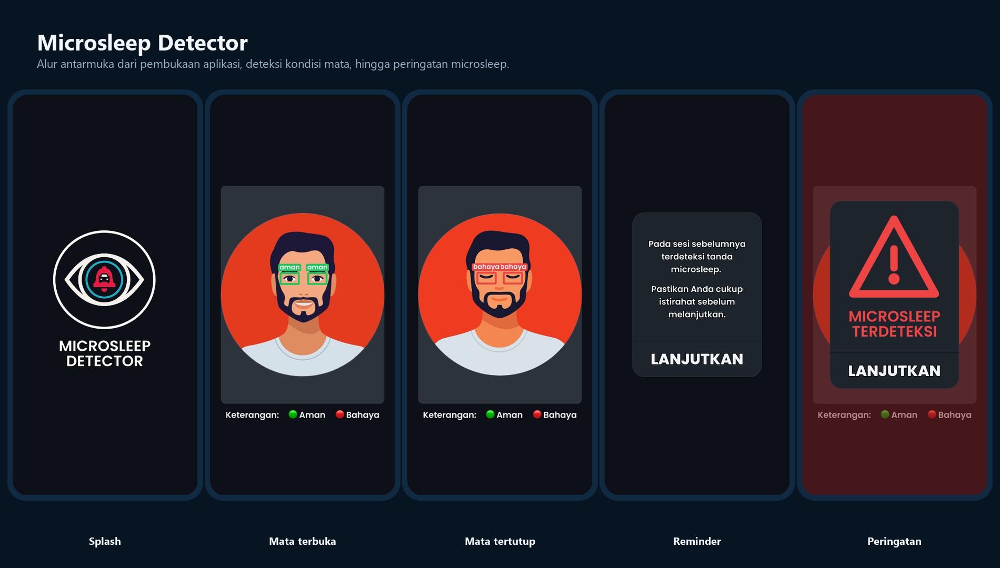

Android integration
Mengintegrasikan CameraX untuk aliran frame real-time serta antarmuka peringatan pada Android.
Semua Proyek/Microsleep Detector
← Kembali ke semua proyekComputer Vision · Android
Prototipe aplikasi Android on-device untuk mendeteksi indikasi microsleep dari kondisi mata dan memberi peringatan audio-visual secara real-time.
Alur inferensi on-device

Microsleep dapat membuat pengemudi kehilangan kewaspadaan dalam waktu singkat. Proyek ini mengeksplorasi pendekatan non-intrusif berbasis kamera depan perangkat Android agar indikator mata dapat dianalisis langsung tanpa koneksi eksternal.
Mengintegrasikan CameraX untuk aliran frame real-time serta antarmuka peringatan pada Android.
Menggunakan MediaPipe untuk lokalisasi wajah dan area mata sebelum klasifikasi.
Menerapkan MobileNetV3-Small dalam TensorFlow Lite untuk klasifikasi mata terbuka atau tertutup.
CameraX menangkap frame dari kamera depan.
MediaPipe menemukan wajah dan membentuk ROI mata.
MobileNetV3-Small TFLite mengklasifikasi kondisi mata.
Durasi mata tertutup berturut-turut dibandingkan dengan ambang deteksi.
Sistem mengaktifkan alarm dan mencatat keluaran pengujian.
Inferensi dijalankan langsung di perangkat agar alur deteksi tidak bergantung pada koneksi internet atau server eksternal.
MediaPipe digunakan untuk menemukan wajah dan membatasi area mata sebelum frame masuk ke model klasifikasi.
Keluaran mata tertutup dipantau secara berurutan sehingga alarm tidak dipicu hanya oleh satu frame sesaat.
Pengujian berfokus pada kemampuan aplikasi mempertahankan inferensi real-time dan stabilitas penggunaan, bukan hanya keberhasilan menjalankan model sekali.
| Aspek | Skenario | Hasil teramati |
|---|---|---|
| Kecepatan inferensi | Aplikasi aktif selama 30 menit | 17,7 FPS pada akhir pengujian |
| Latensi | Pengukuran pemrosesan frame | 55,3 ms rata-rata |
| Kompatibilitas | Enam perangkat Android | Tidak ditemukan crash atau freeze selama skenario uji |
Hasil menggambarkan perangkat dan kondisi pengujian tugas akhir; bukan sertifikasi untuk penggunaan keselamatan berkendara.